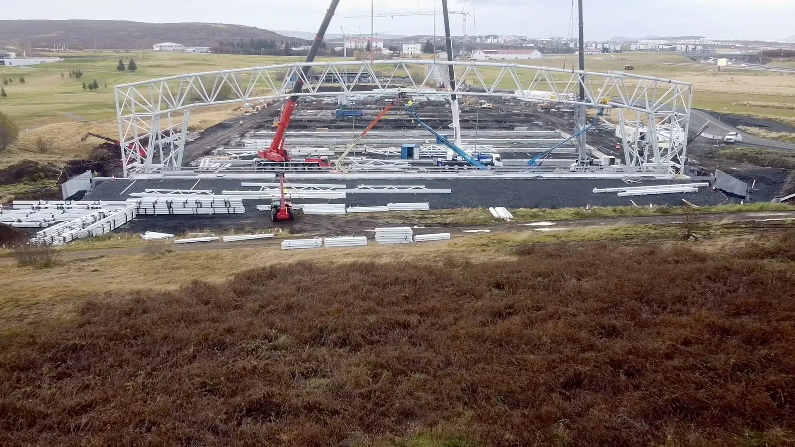

Stálgrindarhús, mannskapur og kranar, síðan 2003.
- Stofnað
- 2003
- Eigendur
- Freyr Aðalgeirsson
Víðir Starri Vilbergsson - Heimili
- Miðhraun 22b, 210 Garðabær
Borgarafl var stofnað árið 2003 og hefur alla tíð verið leiðandi í uppsetningu stálgrindarhúsa á Íslandi, í samvinnu við aðalverktaka á borð við ÍAV, Ístak, ÞG verk og Eykt. Við erum með sérþjálfaða starfsmenn og öflugan tækjakost til að tryggja hraða og góða þjónustu.
Sagan í verkum
- 2003Borgarafl stofnaðSala og uppsetning stálgrindarhúsa
- ÍþróttirEgilshöll, Kórinn, VífilshöllKnattspyrnuhúsin á Akureyri og í Vestmannaeyjum
- IðnaðurKísilverið í Helguvík40 m há stálgrind, 3.700 t
- FlugFlugskýli Icelandair96 m frítt haf, 120 t híft í 26 m hæð
- KælingVöruhús Haga og frystiklefi Eskju94.000 m³ og 8.000 t
Myndband

Eigendur
- Freyr Aðalgeirssonframkvæmdastjóri660 1701freyr@borgarafl.is
- Víðir Starri Vilbergssonmeðeigandi660 1704starri@borgarafl.is